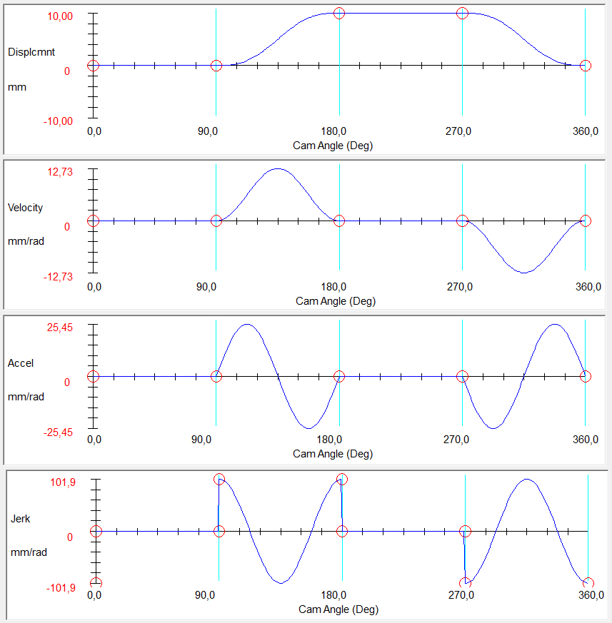

Em síntese de cames, o contorno físico é construído a partir de uma curva de movimento. Essa curva informa quanto o seguidor se desloca para cada ângulo do came, e suas derivadas informam velocidade, aceleração e trancos associados.
Deslocamento, velocidade e aceleração
Se \(S(\theta)\) é o deslocamento do seguidor, a velocidade relativa ao giro do came depende de \(dS/d\theta\), e a aceleração depende de \(d^2S/d\theta^2\). Em uma máquina real, essas derivadas importam porque forças inerciais, vibração e contato são afetados diretamente pela forma da curva.
Uma curva que parece aceitável no gráfico de deslocamento pode gerar mudanças bruscas de velocidade ou aceleração. Por isso os métodos de projeto verificam o conjunto deslocamento, velocidade, aceleração e, em aplicações mais exigentes, jerk.
Repouso e velocidade constante
Trechos de repouso têm deslocamento constante, velocidade nula e aceleração nula. Eles são úteis quando a máquina precisa aguardar uma operação: enchimento, prensagem, corte, inspeção ou transferência.
Trechos de velocidade constante parecem simples, mas não podem ser conectados diretamente a repousos sem transição. Sair de velocidade zero para velocidade constante instantaneamente implicaria aceleração infinita no modelo ideal. Na prática, é necessário usar curvas de transição antes e depois.

Movimento cicloidal
O movimento cicloidal é muito usado porque pode iniciar e terminar com velocidade e aceleração nulas em um trecho completo. Isso facilita a ligação com repousos e reduz descontinuidades severas. Ele é especialmente útil em ciclos com subida, parada, descida e nova parada.
Quando o projeto exige uma transição suave entre repouso e movimento, curvas cicloidais completas ou parciais costumam ser boas candidatas. A escolha depende do trecho anterior e posterior.

Movimento harmônico
O movimento harmônico simples também aparece com frequência em cursos introdutórios. Ele tem interpretação geométrica clara e permite construir trechos de subida ou descida com equações compactas. Em algumas conexões, porém, a aceleração no início ou fim pode não casar com o trecho vizinho.
Por isso, não basta escolher "harmônico" porque a curva é conhecida. É preciso verificar se as condições de velocidade e aceleração nos pontos de ligação são compatíveis com o restante do ciclo.
Polinomial de oitavo grau
Curvas polinomiais de ordem alta permitem controlar mais condições de contorno. O polinômio de oitavo grau aparece como alternativa quando se deseja ajustar deslocamento, velocidade e aceleração em pontos específicos, inclusive com comportamento assimétrico.
A vantagem é flexibilidade. A desvantagem é que o resultado pode perder intuição geométrica e precisa ser verificado com cuidado, especialmente em aceleração e curvatura.
Exemplo conceitual: espera dupla
Considere um mecanismo de preenchimento em que uma lata deve aguardar, avançar até a posição de enchimento, permanecer parada durante o processo e retornar. Esse ciclo naturalmente pede duas esperas e dois trechos de movimento. Uma tentativa linear pura gera transições abruptas. Uma solução mais adequada usa curvas suaves para avançar e retornar, intercaladas por repousos.
Esse exemplo mostra a função da síntese: transformar uma sequência operacional em uma curva \(S(\theta)\) que respeite deslocamento, tempo, suavidade e viabilidade geométrica.
Critérios práticos de seleção
- use repouso quando a máquina precisa manter o seguidor parado;
- evite ligar velocidade constante diretamente a repouso;
- prefira curvas com velocidade e aceleração compatíveis nos pontos de junção;
- verifique se os picos de velocidade e aceleração são aceitáveis;
- avalie depois o ângulo de pressão e a curvatura do perfil resultante.